TCOD: 时间课程如何驯服多轮 Agent 蒸馏
这篇论文把多轮 Agent 的 on-policy distillation 失败模式拆开来看：问题不只是学生弱，而是学生自己的早期错误会进入后续历史，逐轮把状态推离教师的有效支持区，导致 KL 信号越来越不可靠。
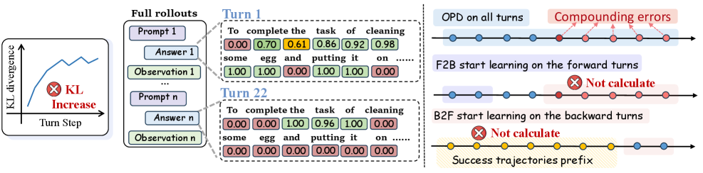
TL;DR
多轮 Agent 上直接做 OPD 会因跨回合错误累积而出现 trajectory-level KL instability。TCOD 用时间课程控制学生接触的轨迹深度，提出 F2B 和 B2F 两种变体，在 ALFWorld、WebShop、ScienceWorld 上稳定 KL，并让小模型从近零成功率恢复。
vanilla OPD 初始 KL 可达到约 1000，收敛后约 60，早期训练非常不稳定。
Qwen3-1.7B 上，TCOD-F2B η=6 的平均成功率比 vanilla OPD 高 18.67 点。
相比 vanilla OPD，TCOD 在训练总时间上最高减少约 32%。
论文概述
问题
传统 OPD 在数学、QA 这类单轮任务里常能稳定降低 KL，但多轮 Agent 每一步都会把动作和环境反馈写入历史，早期动作错误会改变后续状态分布。
方案
不要一开始就让学生承担完整长轨迹。TCOD 把可学习的交互深度设为课程变量 k，从短 horizon 开始，随训练步骤逐步扩展。
贡献
论文识别 trajectory-level KL instability，给出 F2B/B2F 两个轻量实现，并在三个多轮 benchmark 上验证 KL 稳定性、成功率和训练效率。
背景：OPD 的“好信号”为什么到了多轮会变脆
OPD 的吸引力在于，它用教师分布给学生自己的 rollout 提供稠密监督，比只靠稀疏奖励更容易训练。单轮任务里，学生输出一次答案，教师对这个答案附近的 token 分布给出 KL 信号。多轮 Agent 则不同：学生第 0 轮的动作会改变第 1 轮观察，第 1 轮动作又改变第 2 轮观察，历史 h_t 会把错误打包传给后续所有 turn。
论文用 ALFWorld 做 pilot study，发现小学生模型在 vanilla OPD 下会同时出现 KL escalation 和 success rate collapse。即使某些更大模型最终能收敛，初始 KL 也高到足以拖慢训练。问题的根源是长 horizon 的因果耦合，而不是某个单独 token 的监督噪声。
h_t = (o_0, a_0, o_1, a_1, ..., o_{t-1}, a_{t-1}, o_t)
tau = (h_0, a_0, h_1, a_1, ..., h_{T-1}, a_{T-1})
失稳机制
论文把失败模式命名为 Trajectory-Level KL Instability。直觉上，学生走偏后，教师仍会被要求在这个“学生自己制造的状态”上给出监督。但教师在这些状态上未必有高置信策略，于是 KL 信号变大、变噪，学生又用噪声继续更新，训练就会陷入恶性循环。
L_OPD(theta) =
E_{tau ~ pi_theta} [
sum_{t=0}^{T-1} D_KL(
pi_phi(a_t | h_t) || pi_theta(a_t | h_t)
)
]
D_KL(pi_phi || pi_theta) =
sum_a pi_phi(a | h_t) log( pi_phi(a | h_t) / pi_theta(a | h_t) )
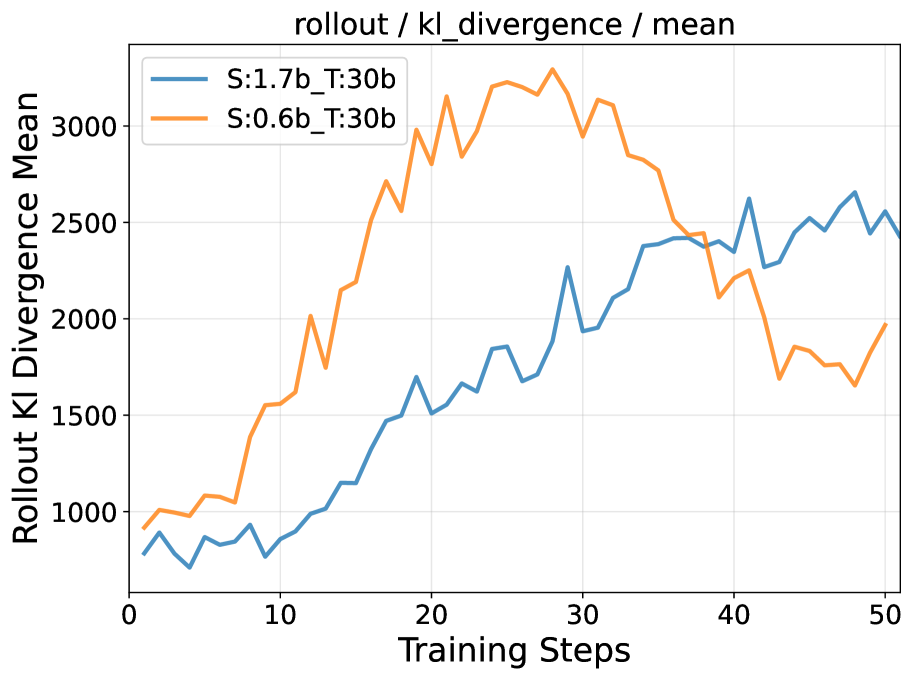
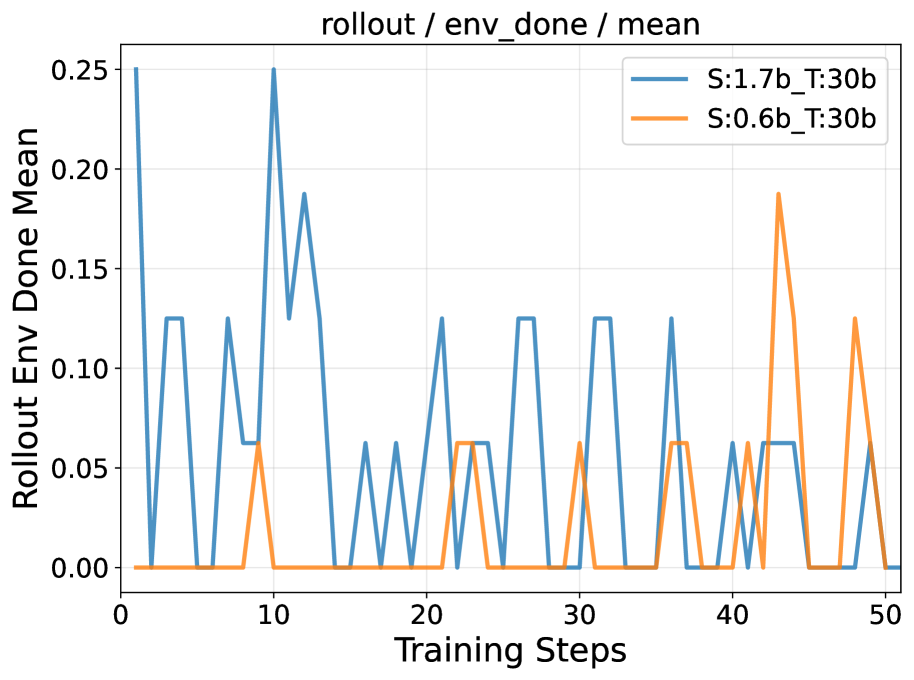
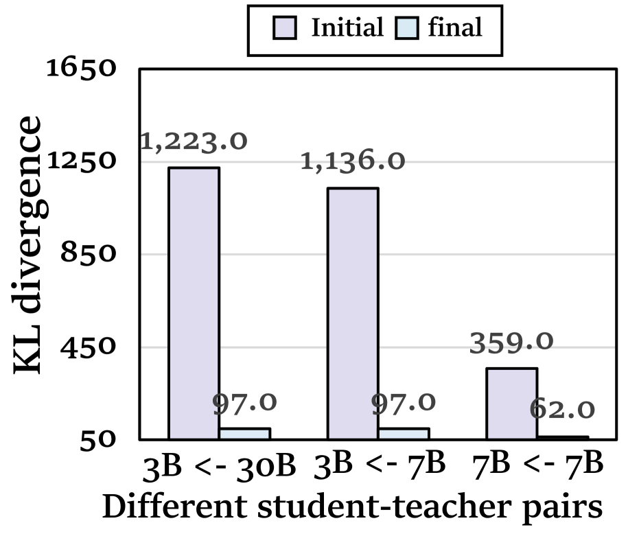
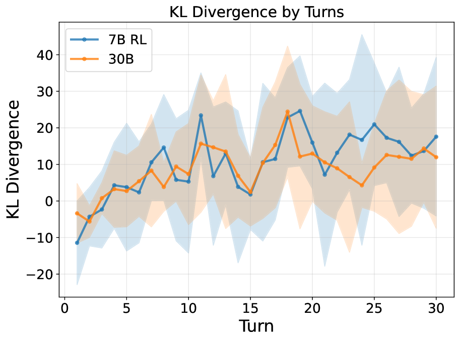
这个机制和 Long-CoT 变长不是一回事
论文专门区分了两类长度问题。Long-CoT 是同一个环境状态上的响应变长；多轮 Agent 是每轮都会改变环境状态，动作和观察进入新的历史。后者带来的不是单次文本更长，而是状态分布被学生动作连续改写，错误会顺着轨迹传播。
核心方法
TCOD 的设计很克制：不换 Agent 架构，不引入复杂奖励建模，只在 rollout 的时间深度上加课程。它把“完整任务”拆成一个逐步变长的 horizon，先让学生在短轨迹里拿到可靠 KL，再扩展到长轨迹。
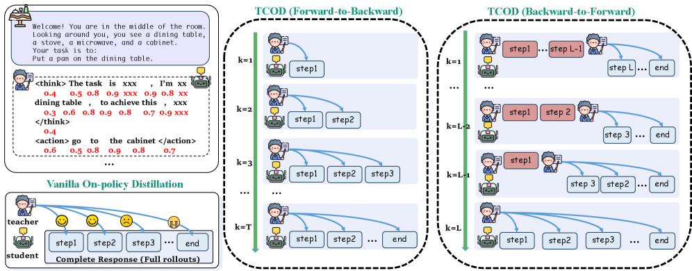
统一课程变量：k
论文使用线性 pacing，把学生当前可承担的交互深度写成训练步数的函数。eta 越大，课程推进越慢，学生会在当前 horizon 上停留更久。
k = k_start + floor(n / eta), n in {1, ..., N}
F2B: k <- min(k_start + floor(n / eta), T_max)
B2F: k <- min(k_start + floor(n / eta), L)
TCOD-F2B：Forward-to-Backward
F2B 是“从任务开头向后扩展”。训练初期，学生只 rollout 前 k 步，损失也只计算这些早期 turn 的 KL。随着 k 增大，学生逐渐接触更长轨迹，直到完整任务。
L_TCOD_F2B(theta) =
E_{tau ~ pi_theta} [
sum_{t=0}^{k-1} D_KL(
pi_phi(a_t | h_t) || pi_theta(a_t | h_t)
)
]
TCOD-B2F：Backward-to-Forward
B2F 是“从接近终点向前扩展”。先用教师执行成功轨迹 tau* 的前缀，把环境带到中间状态，再让学生接管后 k 步。早期学生面对的是较短的收尾问题，随后逐渐从更早状态开始。
L_TCOD_B2F(theta) =
E_{tau ~ (pi_phi, pi_theta)} [
sum_{t=L-k+1}^{T-1} D_KL(
pi_phi(a_t | h_t) || pi_theta(a_t | h_t)
)
]
算法视角
for n = 1 ... N:
k = min(k_start + floor(n / eta), T_max)
initialize environment and empty history
for t = 0 ... k - 1:
sample action from student pi_theta(. | h_t)
execute action and update history
loss = sum_{t=0}^{k} KL(pi_phi(. | h_t) || pi_theta(. | h_t))
update theta with gradient of loss
pre-collect successful teacher trajectories T*
for n = 1 ... N:
sample tau* with length L
k = min(k_start + floor(n / eta), L)
for t = 0 ... L - k - 1:
execute teacher action with stop-gradient
for t = L - k ... L:
sample and execute student action
loss = sum_{t=L-k}^{L} KL(pi_phi(. | h_t) || pi_theta(. | h_t))
update theta
为什么这两个方向都合理
F2B 更像渐进式在线练习：学生从真实初始状态开始，但一开始只被要求走很短的路。它不需要 teacher demonstrations，改动最小，训练效率也更高。B2F 更像 reverse curriculum：教师先把学生送到接近成功的位置，避免早期错误立刻污染全轨迹；代价是需要预先收集成功教师轨迹，并且 rollout 时教师前缀也要参与环境交互。
工程细节：异步采样和 staleness 控制
所有实验运行在 8 张 NVIDIA H20 96GB GPU 上。作者把 rollout actor 和 learner 解耦：4 张 GPU 用于 actors，2 张用于 learners，2 张用于 teachers。轨迹进入 lock-free ring buffer，learner 从共享 buffer 取样更新。
为了提高多轮样本效率，一条完整轨迹会拆成多个 prefix sub-trajectory。每条经验记录采集时的 policy version；若 n_current - n_old > Delta_max，就丢弃这条经验。论文经验上设置 Delta_max = 2，在 sample efficiency 和 on-policy 约束之间取得平衡。
实验分析
实验覆盖 ALFWorld、WebShop、ScienceWorld。核心不是单纯刷新榜单，而是回答三个问题：TCOD 能否缓解 KL escalation；学生能否超越教师失败边界；课程增长率和训练成本是否可控。
| Benchmark | 类型 | 难度 | OOD | 最大回合 |
|---|---|---|---|---|
| ALFWorld-seen | Embodied | Easy | 否 | 30 |
| ALFWorld-unseen | Embodied | Medium | 是 | 30 |
| ALFWorld-hard | Embodied | Hard | 是 | 30 |
| WebShop | E-commerce | Medium | 否 | 15 |
| ScienceWorld | Scientific Reason | Hard | 否 | 30 |
主结果 1：ALFWorld 上成功率和步数同时改善
| 学生模型 | 方法 | Valid Seen SR | Valid Unseen SR | Hard SR | 关键解读 |
|---|---|---|---|---|---|
| Qwen2.5-3B | Vanilla OPD | 65.72 | 60.45 | 10.74 | 强于 SFT，但仍受长轨迹不稳定影响。 |
| Qwen2.5-3B | TCOD-F2B | 81.43 (+15.71) | 79.19 (+18.74) | 9.92 (-0.82) | seen/unseen 提升最大，hard split 上不如 B2F。 |
| Qwen2.5-7B | Vanilla OPD | 75.37 | 72.14 | 13.22 | 更大模型可承受部分 KL 噪声，但效率仍低。 |
| Qwen2.5-7B | TCOD-B2F | 86.43 (+11.06) | 77.61 (+5.47) | 20.66 (+7.44) | hard split 表现最好，并超过 teacher 的 6.61。 |
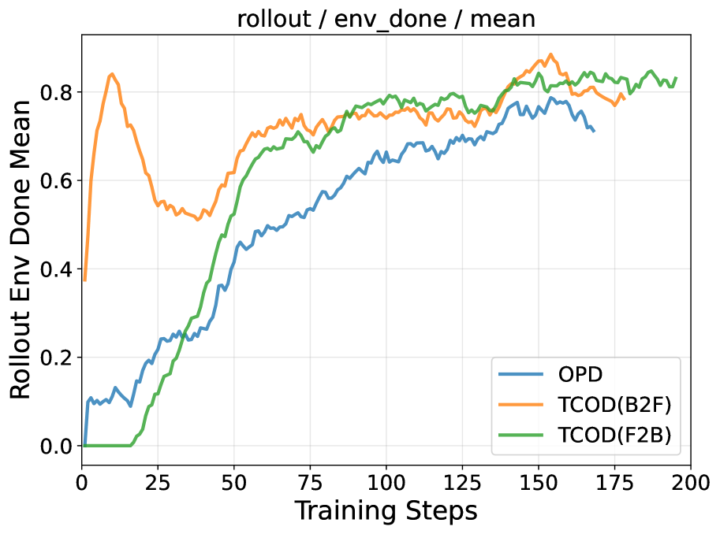
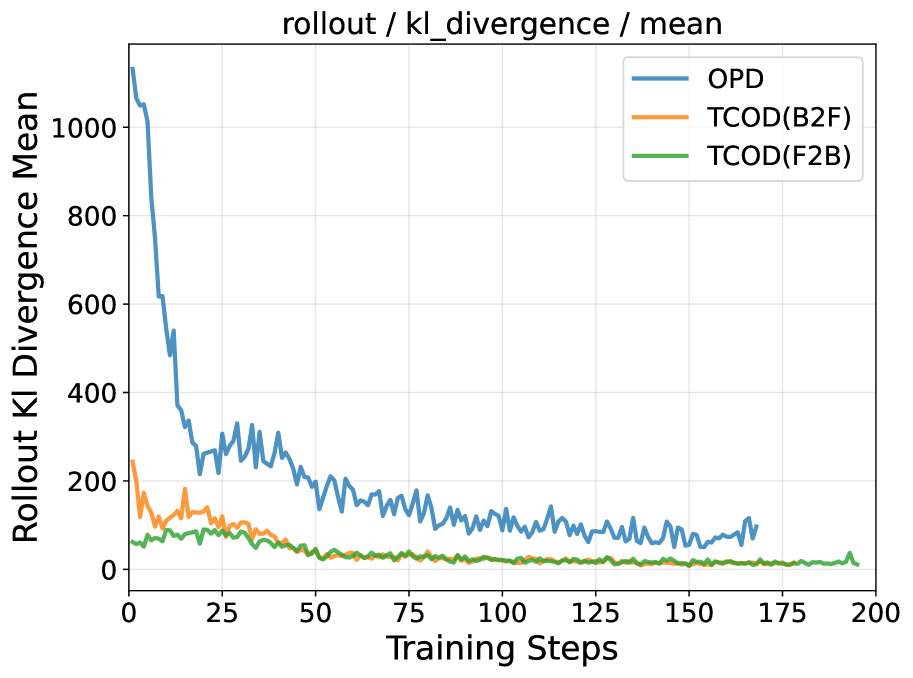
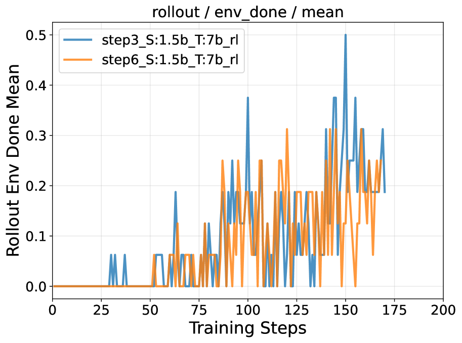
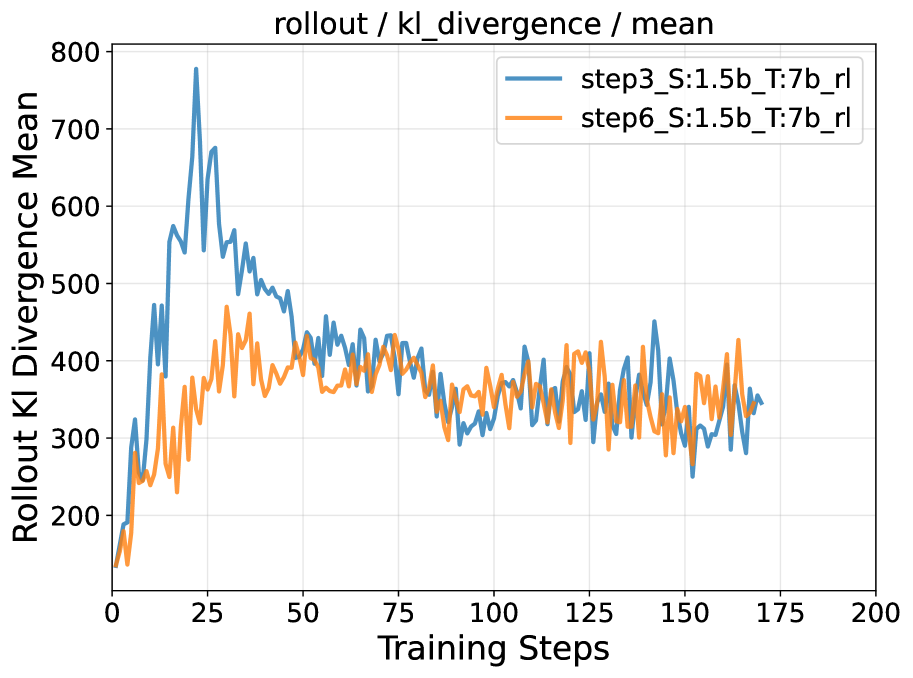
eta 会让课程推进更慢，KL 更稳。主结果 2：Qwen3 小模型从近零成功率恢复
| 学生模型 | 方法 | WebShop | ALFWorld | ScienceWorld | Avg |
|---|---|---|---|---|---|
| Qwen3-1.7B | Vanilla OPD | 0.14 | 0.32 | 0.05 | 0.17 |
| Qwen3-1.7B | TCOD-B2F η=4 | 21.12 | 23.87 | 11.34 | 18.78 (+18.61) |
| Qwen3-1.7B | TCOD-F2B η=6 | 21.78 | 23.65 | 11.08 | 18.84 (+18.67) |
| Qwen3-4B | Vanilla OPD | 30.12 | 36.85 | 15.95 | 27.64 |
| Qwen3-4B | TCOD-F2B η=2 | 31.81 | 38.95 | 17.85 | 29.54 (+1.90) |
主结果 3：学生并非只能复制教师
ALFWorld hard split 由 121 个教师在 pass@10 下失败的任务组成。Qwen2.5-7B-RL 教师在 hard split 的成功率只有 6.61。TCOD-B2F 训练出的 Qwen2.5-7B 学生达到 20.66，超过教师 14.05 点；Qwen2.5-3B 学生用 B2F 也达到 13.22。
这个现象的合理解释是：蒸馏并不等于逐轨迹复制。OPD 让学生在自己的状态分布上学习教师分布；TCOD 又控制了学生进入困难状态的节奏。学生可能学到比某次教师采样更稳的策略，尤其是在 teacher pass@10 失败但 teacher 分布仍包含局部有用偏好的区域。
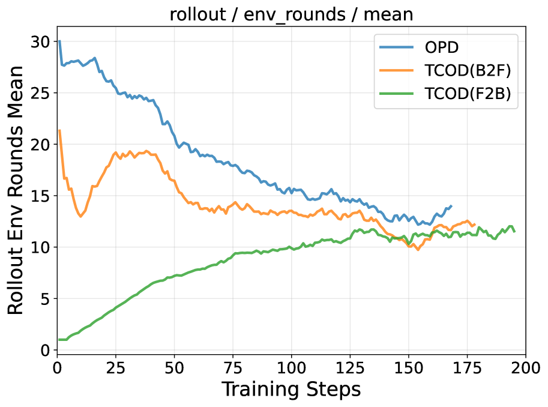
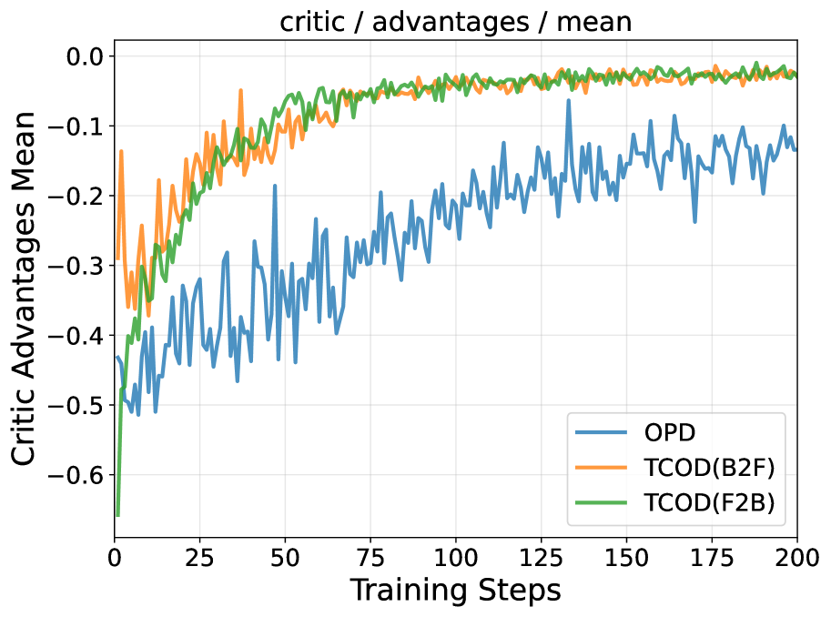
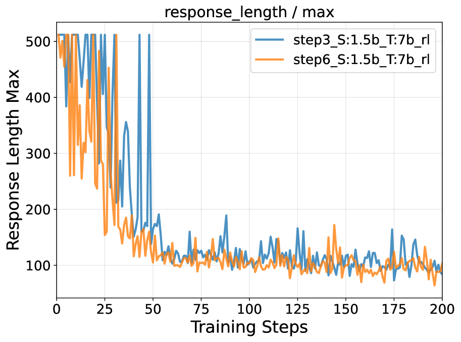
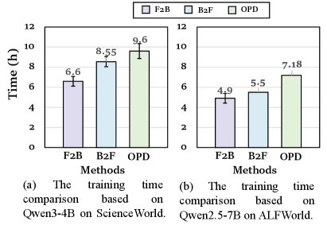
实验里的边界条件
η={2,4,6} 的成功率变化小于 2%，部署时不需要极端调参。
领域适配教师比单纯更大的通用教师更关键。Qwen2.5-7B-RL 在 ALFWorld 上比 Qwen3-30B 更有用。
B2F 依赖预先收集的成功教师轨迹，适合教师能稳定给出演示的环境。
F2B 不需要 demonstrations，是更直接的 drop-in 方案，训练时间也通常更低。
深度理解问答
Q1为什么单轮 OPD 的稳定经验不能直接迁移到多轮 Agent？
单轮任务里，学生输出一次，教师在这个输出附近给监督。多轮 Agent 的状态是历史 h_t，它包含过去所有观察和动作。学生在第 1 轮的小错误会改变第 2 轮观察，第 2 轮错误继续改变第 3 轮，教师被迫在越来越偏离专家轨迹的历史上打分。KL 变大并不只代表“学生不像教师”，还可能代表“这个状态对教师也不可靠”。
Q2“教师有效支持区”是什么意思？
可以把教师看成在熟悉状态上有清晰动作偏好的分布。当学生 rollout 生成的状态仍接近教师会访问的状态时，教师分布能提供有价值的 KL 监督；当学生错误连续累积，进入教师很少访问或任务已被破坏的状态时，教师给某些 token 的概率会下降，KL 信号变大且更难解释。论文没有形式化定义这个支持区，但 per-turn KL 上升和成功率崩塌说明这种偏移正在发生。
Q3F2B 和 B2F 应该怎么选？
如果没有稳定的教师成功轨迹，或者想最小化工程改动，F2B 更合适：限制学生最大交互步数即可。如果教师能通过 pass@k 收集到成功轨迹，B2F 可以把学生放在更接近成功的中间状态，尤其适合早期步骤很容易犯错、导致后续全崩的任务。论文结果里，F2B 在 seen/unseen 提升和效率上很强，B2F 在 hard split 上更能跨过教师失败边界。
Q4为什么 TCOD-B2F 有机会超过教师？
hard split 中“教师失败”是按 pass@10 采样定义的，不等于教师分布没有任何有用信息。B2F 用教师成功轨迹作为课程起点，学生在逐步扩展的接管区间内学习教师局部分布，同时通过自己的 rollout 探索新的状态。最终策略可能组合出比有限次教师采样更稳的动作序列。这里的超越不是凭空产生知识，而是课程让学生更有效地利用了教师分布中的局部偏好。
Q5为什么更强教师不一定更好？
附录观察显示，3B 学生配 30B 强教师和配 7B RL 教师的提升相近，而 7B 学生配 7B RL 教师收敛更快。原因可能有两层：第一，领域适配比参数规模更重要，ALFWorld 上的 RL 教师更贴近目标环境；第二，师生能力差距太大时，教师分布中的细粒度偏好未必落在学生可学习区域，KL 可能变成过强约束。
Q6TCOD 和强化学习课程有什么区别？
TCOD 的训练信号仍然是教师-学生 KL，不是环境奖励。课程控制的是 rollout horizon 和监督区间，而不是按奖励难度筛任务。相比很多 RL curriculum，它不需要额外模型估计难度，也不改变底层 distillation 目标。它更像给 OPD 加一个时间维度的安全阀。
Q7这篇论文的主要局限是什么？
B2F 需要预先收集成功教师轨迹，会带来额外成本；固定线性课程虽然在三类 benchmark 上鲁棒，但不同环境或师生组合可能需要自适应 pacing；实验集中在文本多轮环境，尚未证明能直接迁移到多模态或真实物理 embodied 场景。论文提到可以用 KL 的指数滑动平均来动态调节 horizon，这是自然的后续方向。
总结与思考
读完后应留下的三件事
第一，multi-turn OPD 的核心风险是轨迹层面的分布偏移，不是简单的 token-level mismatch。第二，控制学生接触轨迹深度是一种低成本但有效的稳定化手段。第三，教师的领域适配和师生能力匹配，比“教师越大越好”更接近这类蒸馏任务的真实瓶颈。
适用场景
TCOD 适合长 horizon、稀疏奖励、教师可提供分布监督的 Agent 训练，尤其是 ALFWorld/WebShop 这类文本交互任务。F2B 适合快速接入；B2F 适合教师能采集成功轨迹、且任务后半段学习信号更稳定的场景。